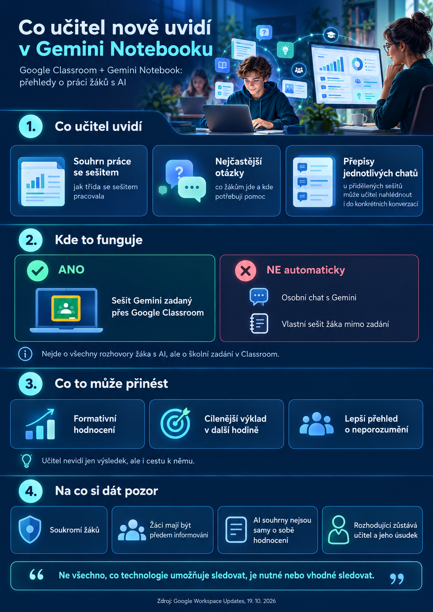

Když učitel vidí nejen výsledek, ale i cestu k němu
Představme si běžnou situaci ze školy.
Učitel zadá žákům prostudovat téma krátkodobé a dlouhodobé paměti. K dispozici mají studijní materiály a AI asistenta, kterého se mohou ptát na všechno, čemu nerozumějí.
Doposud učitel většinou viděl až výsledek: vypracovaný pracovní list, test nebo odpověď žáka.
Nově může získat také přehled o tom, jak žáci při učení postupovali.
Google 19. října 2026 oznámil zavedení funkce Insight Summaries, která analyzuje práci žáků s přidělenými sešity Gemini Notebook prostřednictvím Google Classroom.
Co všechno učitel uvidí?
Novinka nabízí tři základní možnosti.
Souhrn práce se sešitem
Učitel získá přehled o tom, jak žáci s přiděleným sešitem pracovali. Může tak lépe posoudit, zda připravené materiály a AI podpora plní svůj účel.
Nejčastější otázky a problematická témata
Gemini vytvoří souhrn opakujících se témat, typických otázek, možných silných stránek a oblastí, ve kterých žáci potřebují další podporu.
Učitel například zjistí, že se opakovaně objevují otázky týkající se rozdílu mezi vnímáním a představivostí.
Namísto dalšího obecného opakování může následující hodinu zaměřit právě na tento problém.
Přepisy individuálních rozhovorů
Učitel může zobrazit konverzace jednotlivých žáků s přiděleným sešitem.
Může tak lépe pochopit, jak žák formuloval otázky, o jaká vysvětlení žádal nebo na jaké nejasnosti při studiu narazil.

Praktický příklad: občanská nauka na střední škole
Představme si, že učitel připraví Gemini Notebook na téma Psychologie – paměť, myšlení a učení.
Do sešitu vloží odborné texty, studijní materiály, příklady z běžného života a otázky k procvičování.
Žáci dostanou zadání:
Prostudujte si základní druhy paměti. Pomocí Gemini Notebook si nechte vysvětlit pojmy, kterým nerozumíte. Požádejte AI o konkrétní příklady a ověřte si své znalosti.
Po skončení práce může učitel zjistit, že se opakují například následující otázky:
- Jaký je rozdíl mezi krátkodobou a pracovní pamětí?
- Proč si některé informace pamatujeme lépe než jiné?
- Jak funguje zapomínání?
- Proč nestačí přečíst si učivo pouze jednou?
Takové informace jsou pro učitele cenné.
Ne proto, aby mohl žáky kontrolovat na každém kroku, ale proto, aby lépe porozuměl tomu, co skutečně potřebují vysvětlit.
Zároveň může odhalit slabší místa vlastních výukových materiálů.
Pokud se většina třídy ptá na stejnou věc, nemusí být problém v žácích. Možná jen původní vysvětlení nebylo dostatečně srozumitelné.
AI jako nástroj formativního hodnocení
Jedním z nejzajímavějších využití nové funkce je formativní hodnocení.
Jeho smyslem není pouze oznámkovat hotový výkon, ale průběžně zjišťovat, kde se žák nachází a co mu pomůže udělat další krok.
Rozhovory s AI mohou učiteli poskytnout další podklady pro tuto práci.
Je však nutné rozlišovat mezi aktivitou v chatu a skutečným učením.
Velké množství otázek automaticky neznamená větší znalosti. A naopak žák, který se ptá málo, nemusí učivu rozumět hůře.
Automatické souhrny mohou být nepřesné. Rozhodující zůstává pedagogický úsudek učitele, znalost žáků a ověření výsledků dalšími způsoby.
A co soukromí žáků?
Právě tato otázka si zaslouží zvláštní pozornost.
Na jedné straně stojí legitimní zájem učitele pomáhat žákům a vyhodnocovat přínos školních aktivit.
Na druhé straně je potřeba respektovat soukromí, důstojnost a důvěru žáků.
Rozhovor s AI může být pro některé žáky bezpečným prostředím, kde se odváží zeptat na věc, kterou by před celou třídou nevyslovili.
Pokud však vědí, že jejich otázky čte učitel, mohou své chování změnit.
Mohou se méně ptát, vyhýbat se určitým tématům nebo se obávat, že budou podle svých dotazů hodnoceni.
Proto nestačí pouze technické upozornění zobrazené v aplikaci.
Škola by měla předem jasně vysvětlit, co učitel uvidí, proč k těmto informacím přistupuje a jak s nimi bude nakládat.
Při zavádění funkce je vhodné stanovit pravidla informování žáků, přístupu k údajům, účelu využití, uchovávání dat a respektování GDPR.
Kdo může novinku využívat?
Google v oznámení uvádí Google Workspace for Education Fundamentals, Standard a Plus. Zavádění začalo 19. října 2026.
Samotná edice nestačí: Gemini Notebook musí učitelům i žákům ve školním prostředí povolit správce školního účtu.
Přehled Insight Summaries vznikne jen tehdy, když žák s přiděleným sešitem skutečně pracuje a interaguje s ním. Pouhé přiřazení sešitu tedy nestačí.
Dostupnost konkrétní funkce ovlivňují také nastavení školního prostředí a příslušná oprávnění. Školy by proto měly ověřit podmínky nasazení ve svém účtu.
Musí škola přejít na Google Classroom?
Nemusí.
Školy používající Microsoft Teams, OneNote nebo jiné platformy mohou nadále pracovat ve svém stávajícím prostředí.
Pro využití přehledů Insight Summaries je však důležité zadávání sešitů prostřednictvím podporovaného prostředí Google Classroom.
Škola s existujícím Google Workspace for Education může zvážit omezený pilot v jednom předmětu nebo jedné třídě.
Závěrem: více informací ještě neznamená lepší výuku
Novinka Googlu ukazuje, kam se mohou vzdělávací AI nástroje posouvat.
Od generování pracovních listů, shrnutí a testů se dostáváme k nástrojům, které učiteli mohou pomáhat porozumět samotnému procesu učení.
Současně však přichází nová odpovědnost.
Ne všechno, co technologie umožňuje sledovat, je nutné nebo vhodné sledovat.
Smyslem nových přehledů by nemělo být vytvoření digitálního dozoru nad žáky.
Jejich největší hodnota spočívá v možnosti lépe učit, přesněji reagovat na neporozumění a podporovat samostatné přemýšlení.
Protože dobrý učitel nepotřebuje vědět úplně všechno, co žák napsal.
Potřebuje především poznat, kdy a s čím mu má pomoci.
Primární zdroj
Google Workspace Updates: Insight Summaries pro učitele a aktualizované sdílení Gemini Notebooku v Google Classroom · oznámení z 19. října 2026.